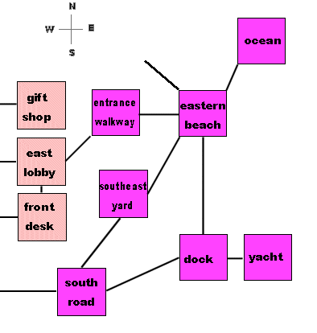
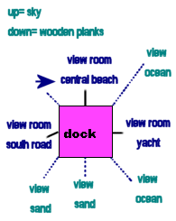
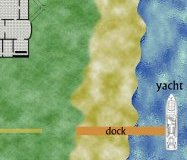

In the Trenches #6:
In the Trenches #6:
An Example Room
Its time to put theory into practice and show how I've personally built a room. I'll say right now that it took me longer than a day. There was a lot I had to learn along the way, including elementary graphic design- and learning to think in pictures. Some of my volunteer builders picked up on the room making process faster than I did, others didn't. I'm very glad I'm not going at it alone, regardless. Here's a look at the first room we completed for Devils Cay.
#1 The Room Name
My room is simply called dock on the maps and "the dock" in all documentation. In all of my Views, I make sure to refer to it as "the dock". When typing it into the Interface, I had to be sure the Def box was checked true. Def is short for definite, but really means proper. It is used for proper nouns and stops the system from adding any additional or different articles in front of "the". Notice that my name isn't capitalized or punctuated, so that "the docks" can appear in the center of sentences without causing a humorous but embarrassing errors.
#2 The Logical Map
Here we have a portion of Devils Cay's logical map. It covers the rooms that are geographically relevant to the dock. Black lines connect the dock to three other rooms: the yacht, the south road, and the central beach. The darker colored rooms are all located outdoors, while the lighter peach-colored rooms are part of the villa which is the predominant structure in Devils Cay. Two of the rooms listed, the southern road and the entrance walkway exist for no other purpose than to connect separate geographical locations. I didn't include them in my original logical map. The southeast yard was not found on my original logical map either; I included it after I reviewed a rough draft of the visual map and realized that players would query why they could not go there.
This is an important lesson regarding building. Think in drafts. After you complete a certain segment of building as described in the Storybuilder's Toolkit or In the Trenches # 4 http://www.skotos.net/articles/trenches04.shtml and plunge forward, your new construction may cause you to retrace your steps and rebuild something else in order to provide more depth or consistency. Its much better to take things slow and catch mistakes or make adjustments along the way then to rush through and discover to your dismay that you missed something vital and need to redo several weeks or months worth of work.
#3 The Room As A Cube
In a previous article, I mentioned that I like to start writing room descriptions by imagining the room as a cube and writing down the most important detail located in each direction. The next diagram shows the dock with all ten of the directional views (up, down, n,s,e,w,nw,sw,ne,se) covered. Actual exits are still noted with straight black lines while non-exit views are done with a lighter dotted line. The dark blue text covers Views of other rooms, which described differently- in a time-saving manner- than other details by directing the user to exact copies of the description text written for the appropriate room being seen. The blue arrow in the northwestern corner simply symbolizes that it shares the same view as the northern view. The turquoise text covers areas that do not have exits and therefore aren't directly reachable by characters.
#4 The Room In Relation
A logical map is an extremely useful tool, but it does not provide much detail regarding the relationships that rooms have with each other except for exits. In order to appreciate the size of different rooms and their actual geographical proximity, one must adopt either the utilitarian or mechanical approach described in Building Blocks: Maps http://www.skotos.net/articles/TTnT_53.shtml. I used the utilitarian approach, relying on a general sense of what is big, small, near, far, etc.,. with a just a few given factors. The section of the existing draft of the Devils Cay physical map provides an excellent reference for what surrounds the dock as well as the shape and size of the dock as a room. Only the dock and the yacht are named, with the south road represented as a straight yellow line and the front yard, beach, and ocean all smoothly separated by attributable color. The entrance walkway exists as nothing more than a couple sketched lines at this juncture.
#5 The Room's Brief View
It is simply "the dock" which covers the name of the room.
#6 The Room's Glance View
When a user glances at the dock, the computer will inform them "You are standing on the dock."
#7. The Room's Look View
The first description that required creativity on my part, I decided upon "You are standing on the wooden dock. To the east there is a yacht from which new guests have recently disembarked. To the south, you see sand and palm trees. You can leave the dock by walking to the central beach towards the villa or taking the south road to the west. There is a friendly-looking lady standing next to a sign at the end of the dock.
Since the dock is the initial room players will encounter at the start of the game, I've given a deliberate hint regarding the best route to reach the villa even here in the look description. The friendly-looking lady represents a CNPC suggested by one of my building volunteers.
#8. The Room's Examine View
You are standing on the dock's wooden planks. It rocks gently as the pristine ocean ebbs and flows against the sandy shore. To the east is the shiny white yacht from which new guests have recently disembarked. To the south, you see a thin strip of sandy beach dotted with drooped palm trees tapering off as the cay juts forward into the turquoise-colored water. You can leave the dock by walking to the central beach towards the villa or taking the tarmacs south road to the west past the parked golf cart laden with luggage. There is a friendly-looking native woman with a name tag on her shirt standing next to a large Welcome sign at the end of the dock. The sign appears to include a map and directions for new guests.
You can see how the Examine View builds upon what I've already written, adding additional information a character will acquire only by taking the time to really scan around. I know have a list of unique details about the dock which I can list and create separate details for. Based on the paragraph above, my unique details are: planks/planks, ocean/water, sand/shore/beach/cay, yacht, palm trees, road/tarmac, golf cart, luggage, native/woman, name tag, sign, map, directions. Not all of these details require all four Views, but it behooves me as the game designer to provide as much information about each detail as I can to enhance the environment for players.
Players will get bored seeing the same old thing all the time, no matter how many details you give each room. There are a couple of advanced building tricks however, to spice up detail text.
#9. Bright-Dim-Dark Views
Just when you were beginning to think writing all those descriptions must be a lot of brain-drain, I'm happy to announce that there's more. The Bright-Dim-Dark system allows you to describe how a room might look with or without an obvious light source. Dim provides the shadow middle ground of only partial or obscured lighting between actual light source and darkness.
Look-bright "You are standing on the wooden dock. To the east there is a yacht from which new guests have recently disembarked. To the south, you see sand and palm trees. You can leave the dock by walking to the central beach towards the villa or taking the south road to the west. There is a friendly-looking lady waiting next to a sign at the end of the dock.
Look-dim "You are standing on the wooden dock. To the east there is the outline of a yacht from which new guests have recently disembarked. To the south, you see sand and shadowy palms. You can leave the dock by walking to the central beach towards the villa or taking the south road to the west. There is a friendly-looking lady waiting next to a sign of some kind at the end of the dock.
Look-dark "You are standing on the dock. To the east there is a hulking shadow against the background of the tenebrous waters. You can leave the dock by walking to the central beach towards the villa or taking the south road to the west. You sense someone waiting at the end of the dock.
Notice how details changed, becoming more obscure with the absence of a light source? Someone who comes to the docks at night without a torch or flashlight will miss out on information they'd know if they visited the room at another period of time. Notice that I did not make any comments regarding the sun, moon, etc., in my descriptions. It took me a while to catch on to avoid using words that automatically ascribe bright to day. Its important to remember that bright descriptions are intended to provide information for any light source from a day's sunlight to turning on a lamp at night.
#10. The magic of One-Ofs
Want to some random objects or provide synonyms for one object that exist in the room to spice up your game? You can do it easily. There is a way to write descriptions so that the server provides "one of" several different words and phrases in a specific place in an object's descriptive text. All you need is to utilize the {curly cue brackets} and | pipe | symbols. All the possible descriptions have to be included within the curly cue brackets, with each unique description separated by a pipe. Its possible to create complicated One-Ofs with layers of random descriptions within one another: {choice one| the first choice has {two|a couple|}} random elements within it}
Here's what that my b-d-d "look" views turned into when I applied One-Ofs:
Look-bright "You are {standing on|astride} the wooden dock. To the east there is a {yacht|ship} {from which new guests have recently disembarked|preparing to set sail|bobbing in the ocean}. To the south, you see {sand and palm trees|a desolate beach|the {cay|island} taper off into the sea}. You can {leave the dock|exit|explore the {cay|island|resort} by {walking|moving} north to the {central|sandy|large} beach towards the {villa|resort|towering structure} or {taking|walking along} the {south|tarmacs|narrow} road to the west. There is a {smiling|friendly-looking|cheerful} {lady|woman|native|guide} waiting next to a {sign|wooden sign|Welcome sign} at the end of the dock.
Look-dim "You are {standing on|astride} on the wooden dock. To the east there is the outline of a {yacht|ship|} {from which new guests have recently disembarked|preparing to set sail|bobbing in the ocean}. To the south, you {sand and palm trees|a desolate beach|the {cay|island} taper off into the {dark sea|shadows}. You can {leave the dock|exit|explore the {cay|island|resort} by walking north to the {central|sandy|large} beach towards the {villa|resort|towering structure} or {taking|walking along} the {south|tarmacs|narrow|obscured} road to the west. There is a {smiling|friendly-looking|cheerful} {lady|woman|native|guide} waiting next to a {sign|board} of some kind at the end of the dock.
Look-dark "You are {standing on|astride} on {the dock|some long wooden planks}. To the east there is a {hulking|massive|disturbing} shadow against the background of the {dark|tenebrous|lapping} {waters|ocean|unknown}. You can leave the dock by {walking|moving|creeping} north into the sand or {moving|walking|braving the darkness in the} west. You sense {someone|breathing|something} at the end of the dock.
Next time, I will be talking about a very different kind of building: constructing your personal Storybuilder Proposal in order to apply for an Storybuilding position with Skotos to create your own game. In a month, I'll conclude room building by addressing the amount of information you will need to write for each individual details beyond the default (the standard room Views) and wrap everything up by describing the actual process of writing a room in KarMode.
|
Recent Discussions on In the Trenches:
|
|
|
  |
An Example Room